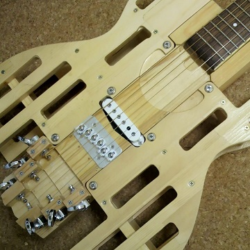
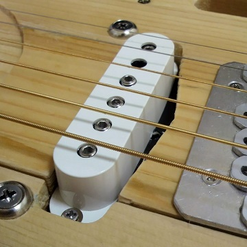

エレキギター用ピックアップを静音ギターへ取り付ける
2015年09月03日 カテゴリー：ギター関係
以前作った静音ギターですが、エレキギター用ピックアップ（DiMarzio DP111 SDS-1）を取り付けました。そのうちアコースティックシミュレーターとヘッドフォンアンプを組み込むという計画です。

ピックアップの取り付け位置はフロントの方がよいと思いますが、ネジと微妙に干渉してしまうのでリアの位置にしました。スケール長の93%の位置です（ストラトキャスターの画像を定規で適当に測って決めました）。まぁBOSS AC-2のサポート情報にシングルコイルのリアポジションでも可とあったので、たぶん大丈夫でしょう。
アコースティックギターは各弦の出力バランスがエレキギターと違うため、ピックアップのポールピースの高さ調整が必要です。そうなるとシングルコイルピックアップの中ではDiMarzioぐらいしか選択肢がありません。調整後は下写真のようになりました。

L.R.Baggsのピックアップのように2弦のポールピースを外しました。そして2弦の出力に合わせるように他のポールピースを調整しています。ピッキングの強さを一定にそろえるのは難しいのでかなり誤差がありそうですが、一応詳細を記載しておきます。
・最終フレットを押さえたときの6弦とポールピースとの距離：3mm
・ピックアップ本体はボディと平行
・1弦ポールピースを1mm引っ込める
・3弦ポールピースを1mm出す
・他のポールピースそのまま
ピックアップのザグリの加工自体はたいしたことはなかったです。本当にトリマーは便利ですね。調子に乗って掘りすぎないようにしないといけません。